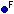
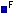
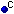

A new tabbed result pane appears at the bottom of the IDE's main window for each RefactorIT operation. The same applies for stand alone version. It lists results of the analysis and smart query functions. These tabs allow you to interact with the source view. Some RefactorIT operations provide toolbar buttons on the tab that let you restart the current process or customize it and to copy from the result pane. To do that you have to right-click the desired pane, select the text you want to copy, and select "Copy To Clipboard." You can close results:
for a particular search by clicking the gray cross button
all results by clicking on the close button in the right-top corner of the results pane.
You can close individual tabs the result pane by right-clicking the message tabs and choosing the Close Tab/Close All buttons.
If You right-click on an item in the results tree You will access a pop up menu, which can contain various refactoring actions related to this item.
For example, assume that You wish to find usages of some certain field. You have performed Where Used action and have found out, that its usages are gathered in some class X. If You wish now to find all usages of this class X, You can simply right-click on it in the results tree, and select Where Used action again.
In Audits results panel You cannot run any general refactorings (like Where Used action or Rename refactoring, for example), but instead You can run Corrective actions, if there are any of them available for the selected violation. Read more about running Corrective actions in Audits help section.
Results of queries are shown in the Results Panel. The left section of the panel features the following toolbar:
Actions for the buttons are the following:
| close query result. | |
| Enables single tab view. Every query will open a new tab. | |
| browse (move back and forward between) query results. | |
| show or hide hidden rows, there is a hide/unhide command in popup menu of result rows. | |
| Expands the results tree of the active query. | |
| Collapse the results tree of the active query. | |
|
filter the results of the active query. |
| refresh results --reruns the active query after you have made changes. | |
| show context-sensitive on-line help. |
The right hand side shows the result for the query performed. Items notation for the right hand side of the results panel (applies for JDeveloper and stand alone version only, for other IDE's local notation is used):
| source file | |
|---|---|
| Non-Java file | |
| Package | |
| Class | |
| public class | |
| public inner class | |
| abstract class | |
| abstract inner class | |
| package private class | |
| package private inner class | |
| protected class | |
| private class | |
| Interface | |
| public interface | |
| public inner interface | |
| package private interface | |
| package private inner interface | |
 | protected interface |
| private interface | |
| Field | |
| public field | |
| public static field | |
|  | package private field |
|  | package private static field |
| protected field | |
| protected static field | |
| private field | |
| private static field | |
| Method | |
| public method | |
| public abstract method | |
| public static method | |
| package private method | |
| package private abstract method | |
| package private static method | |
| protected method | |
| protected abstract method | |
| protected static method | |
| private method | |
| private static method | |
| Constructor | |
| public constructor | |
|  | package private constructor |
| protected constructor | |
| private constructor |